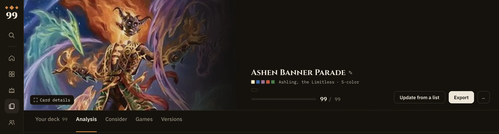
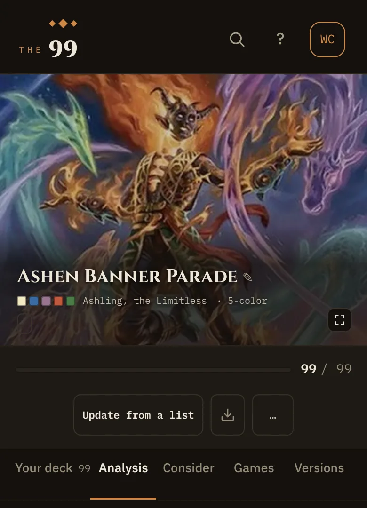
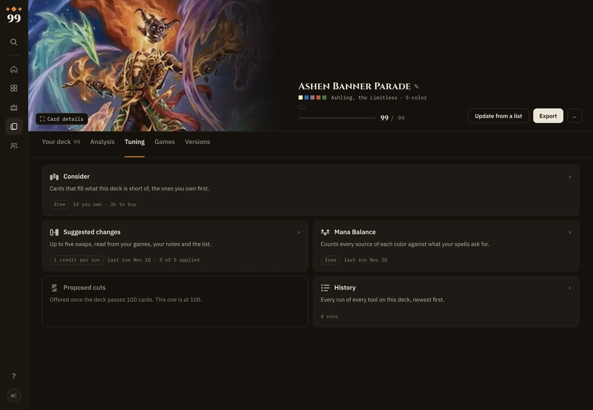
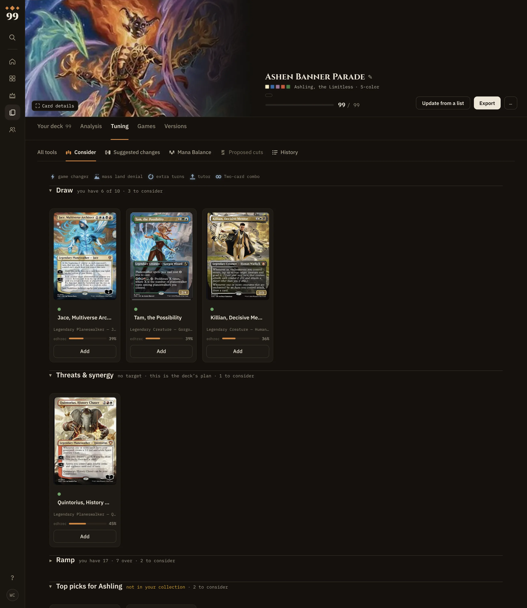
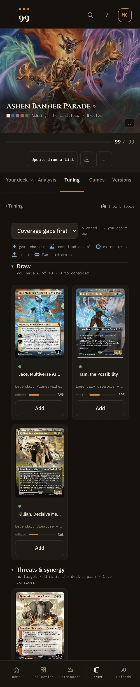

T0 today's tab row (Tuning is the last section of Analysis, under the whole reading). T1 the Tuning tab's landing. T2 Consider opened inside it, the shipped panel.
Today

T0 · Today
Your deck · Analysis · Consider · Games · Versions.

T0 · Today, phone
Same row.
Desktop · 1300

T1 · Tuning
Consider full width first; Suggested changes, Mana Balance, Proposed cuts, History as shipped.

T2 · Consider open
The hub's underline row; the shipped panel under it.
Phone · 390
T1 · Tuning
Stacked tiles, Consider first.

T2 · Consider open
‹ Tuning and 1 of 5 tools; Consider's own toolbar.